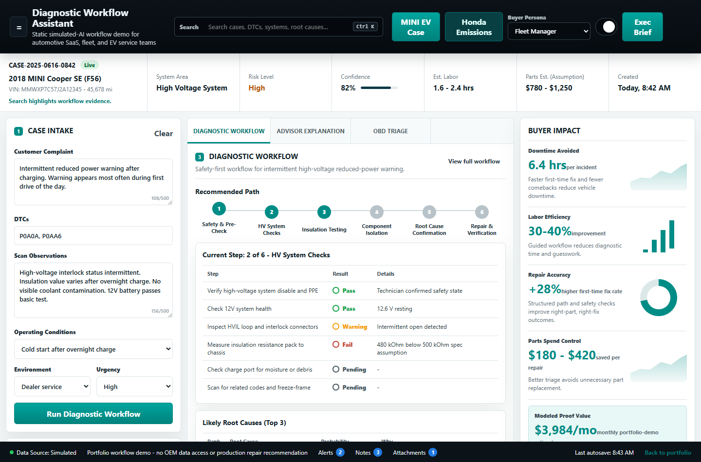

What it takes in
- Vehicle context and customer complaint
- DTCs, scan observations, and operating conditions
- Service environment and urgency level
Automotive SaaS Sales Engineer / Solutions Consultant Candidate
ASE Master automotive technician with BMW/MINI/Honda dealership experience, MINI high-voltage/EV certification, California smog credentials, and a Software Engineering Professional Certificate.

Flagship Demo
How I Built This
The flagship diagnostic demo runs fully in the browser with deterministic case logic, fictional sanitized data, and clear safety boundaries. No backend, no API key, and no production diagnostic claims.
The UI supports discovery, stakeholder translation, proof-of-value framing, and live demo storytelling for fleet, telematics, dealer SaaS, EV service, and diagnostic software buyers.
It shows how I turn messy technician intake into workflow steps, buyer impact, service-advisor language, OBD triage, and copy-ready talk tracks without overstating software or diagnostic authority.
Proof Assets
Target Roles
Primary target is Sales Engineer / Solutions Consultant. Secondary targets include Customer Engineer, Technical Account Manager, Customer Success Engineer, and Implementation Consultant for automotive SaaS, fleet, telematics, EV service, warranty, roadside, and fixed-ops platforms.
Application Materials
Contact
National City, CA | deguzman10@gmail.com | alandeguzman.com
This portfolio uses fictional sanitized cases. It is a workflow demonstration, not a production diagnostic system. Safety decisions and repairs require qualified technician validation and OEM procedures.